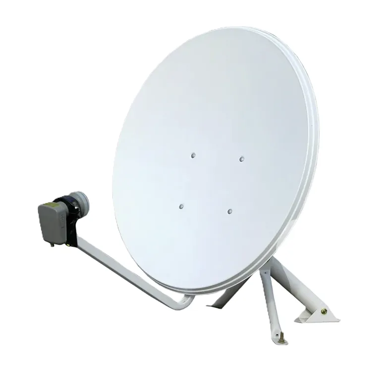
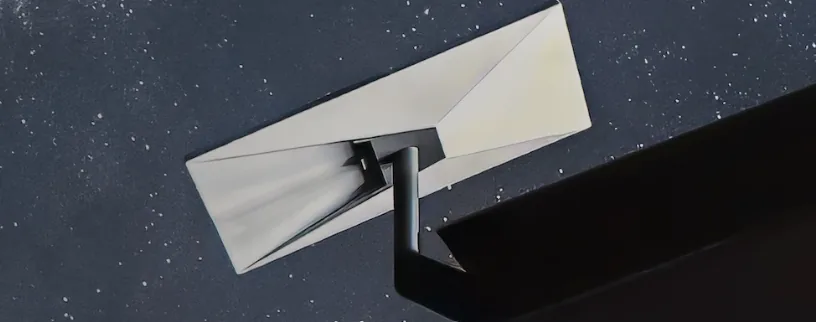

Professionelle Montage, Ausrichtung und Konfiguration von Satellitenanlagen und Starlink-Terminals — für Privatpersonen und Unternehmen in Wien und ganz Österreich.
Was wir installieren
Von der klassischen Satellitenschüssel bis zum modernen Starlink-Terminal — wir montieren, richten aus und konfigurieren alles für Sie.
Fachgerechte Montage von Satellitenschüsseln auf Dach, Balkon, Fassade oder Mastständer — sicher verankert, wetterfest und langlebig.
Exakte Ausrichtung auf Astra, Hotbird oder andere Satelliten mit professionellem Messgerät — für maximale Signalstärke und störungsfreien Empfang.
Saubere Kabelverlegung vom Dach bis zur Anschlussdose — innerhalb der Wand oder als Außeninstallation, inklusive Durchführungen und Abdichtung.
Einrichtung von Receivern, Multiswitches und Verteilanlagen — inkl. Sendersuchlauf, Programmierung und Einschulung.
Professionelle Montage und Einrichtung von SpaceX Starlink-Terminals — inklusive optimaler Standortwahl, Montage und Router-Konfiguration.
Signalmessung, Ausrichtungskontrolle und schnelle Fehlerdiagnose bei Empfangsproblemen — auch für bestehende Anlagen.

Satellitenanlagen
Ob Einfamilienhaus, Mehrparteienhaus oder Gewerbeobjekt — wir planen und installieren die passende Satellitenlösung für Ihren Empfangsbedarf.
Starlink von SpaceX liefert Hochgeschwindigkeits-Internet via Satellit — ideal für Standorte ohne DSL oder Glasfaseranschluss. Wir übernehmen die komplette Installation für Sie.

Montagearten
Wir montieren Ihre SAT-Anlage oder Ihren Starlink-Terminal sicher und sauber — egal wie der Standort aussieht.
Sichere Befestigung auf Flach- oder Schrägdach mit wetterfestem Mastständer und Kabeleinführung.
Montage an Außenwand oder Balkongeländer — platzsparend und optisch sauber integriert.
Erdmast im Garten oder auf Terrasse — ideal wenn Dach oder Wand nicht zugänglich sind.
Unser Ablauf
Schnell, sauber, zuverlässig — so läuft Ihre Installation ab.
Kostenlose Beratung und Terminvereinbarung
Prüfung des idealen Montageplatzes vor Ort
Professionelle Installation und Signalmessung
Einschulung, Test und Dokumentation
Wir beraten Sie kostenlos und erstellen ein unverbindliches Angebot — schnell, transparent und zum Fixpreis.
Kostenloses Angebot einholen →Ein einfaches System für einen Besprechungsraum startet ab ca. 800–1.500 €. Größere Lösungen für mehrere Räume werden individuell angeboten. Kostenlose Beratung vorab inklusive.
Wir installieren Systeme die mit Microsoft Teams, Zoom, Google Meet und anderen Plattformen kompatibel sind — je nach dem was Ihr Unternehmen bereits nutzt.
Ja. Wir rüsten vorhandene Räume mit moderner Konferenztechnik aus — Kamera, Mikrofon, Display und Steuereinheit — ohne großen Umbauaufwand.
Ein Standardraum ist in der Regel in einem halben bis ganzen Tag eingerichtet. Bei mehreren Räumen oder komplexer Verkabelung planen wir das individuell mit Ihnen.
Ja. Nach der Installation erklären wir Ihrem Team wie alles funktioniert — damit vom ersten Tag an alles reibungslos läuft.